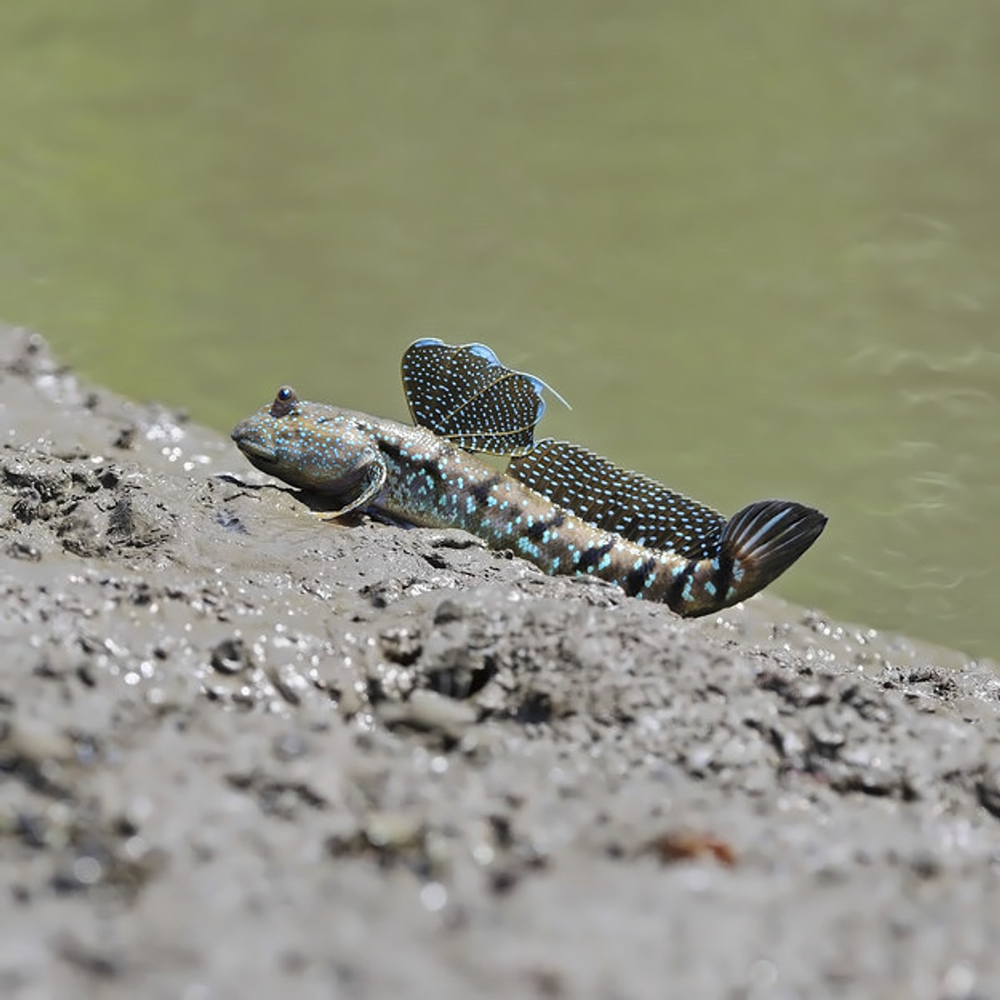
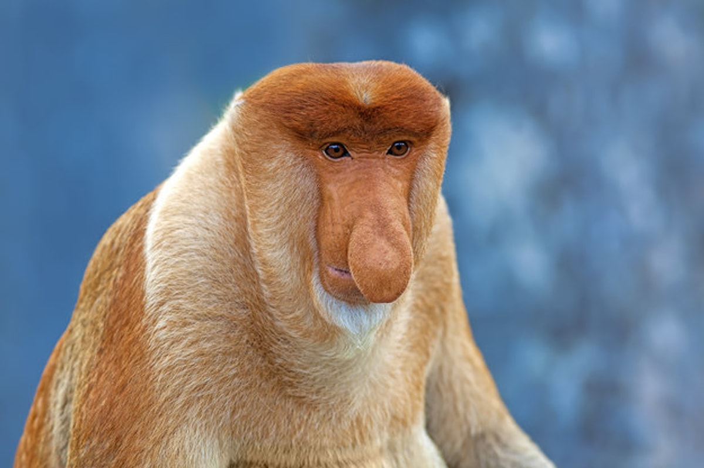

Canlılar, dünyamızdaki tüm yaşam formlarını ifade eden genel bir terimdir. Mikroskobik bakterilerden devasa balinalara kadar çok geniş bir çeşitliliğe sahiptirler. Canlıların ortak özellikleri ve sınıflandırılmaları bilim insanları tarafından detaylı olarak incelenir.
Canlılar; yapı, beslenme, üreme ve çevreye uyum özellikleri sayesinde benzersizdir. Dünya üzerindeki her bir tür, yaşam ağının önemli bir halkasını oluşturur. Onları anlamak, doğayı ve kendi varlığımızı daha iyi kavramamızı sağlar.
Açiklama:Canlıları cansız varlıklardan ayıran bazı temel özellikler vardır:
Cadı makigiller olarak da bilinen Tersiyer primat grubuna ait bir memelidir. Güneydoğu Asya’nın adalarında görebileceğiniz bu canlıların boyutu 9 ila 16 cm, kuyrukları 13 ila 28 cm, kiloları ise 60 ila 160 gram arasında değişmektedir. Maymunlar familyasında en uzun bacaklı tür olan Tersiyerler, çok hızlı tırmanırlar. Tersiyerler ağaçta yaşamakta adeta bir koala gibi ağaca sarılı bir şekilde durmaktadırlar. Bunun sebebi ellerinin tutunmak için yaratılmasıdır. Aynı zamanda tersiyerlerin gözleri fotoğrafta gördüğünüz gibi iridir.
Çamur Zıpzıpı suda yaşayan balıklar ile kara ve sularda yaşayabilen amfibiler arasındaki geçişin günümüzdeki kanıtıdır. Bu sebepten dolayı çamur zıpzıpılarına 'amfibik balıklar” deniyor. Aynı zamanda bir şaşırtıcı bilgi daha! Çamur zıpzıpı’ları balık familyasına ait bir türdür. Çamur zıpzıpıları ile karşılaşmak istiyorsanız Japonya’da suların karalarla birleştiği bölgelerdeki çamurlu topraklara gitmeniz gerekmektedir. Bu balık türü ömürlerinin çoğunu karada geçirmektedir. Karada sürünerek ilerleyen bu canlılar havada bulunan oksijenide soluyabilmektedirler.
Latince ismi Nasalis larvatus olan Proboscis Maymunu, Güney-Doğu Asya’daki Borneo adasında yaşamlarını sürmektedir. Endemik bir tür olan bu tür, Eski Dünya Maymunları'ndan Colobinae aile grubuna aittir. Sarkık burunlarını dişileri ve diğer maymunları etkilemek için kullanırlar. Proboscis Maymunlarının erkekleri 66 ila 72 cm arasında boya, 30 kg kiloya sahiptirler; dişileri ise en fazla 62 cm boyunda ve 15 kilogram ağırlığa sahip olurlar. Fotoğrafa bakınca Proboscis Maymunu ile ilgili dikkat çeken ilk şey uzun burunlarıdır. Erkek Proboscis Maymunları bu uzun burunları ile dişiyi ilişkiye davet ederler. Bunun yanı sıra iletişim kurmak için burunlarını kullanırlar.